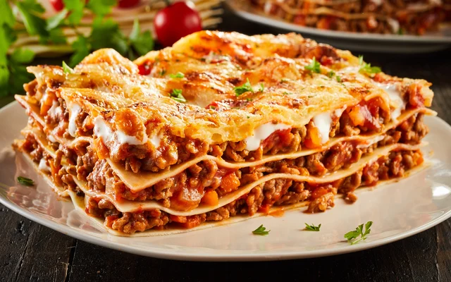
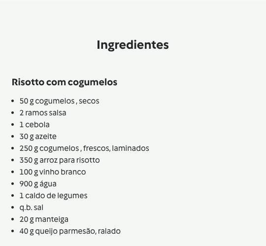
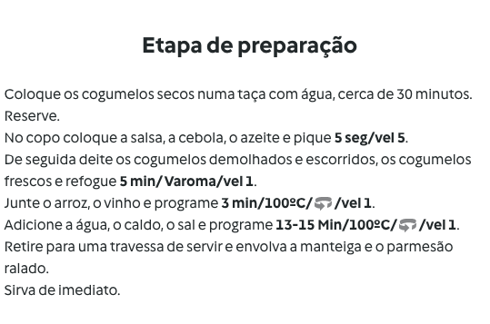

Semana 12 a 16 Out.
2ªfeira: Empadão de Batata Doce e Carne Picada
- Coze batata em água a ferver;
- Esmaga a batata até ficar um puré;
- Faz um refogado de tomate e cebola e cozinha a carne picada;
- Junta tudo, por camadas, num tabuleiro e leva ao forno a 200ºC durante 15min;
3ªfeira: Quiche de Legumes com arroz
Ingredientes necessários:
- Massa Quebrada
- Ovo
- Legumes:
- Tomate
- Alho francês
- Cenoura
- Cogumelos
- Temperos:
4ªfeira: Peixe grelhado com legumes cozidos
Tipos de peixe:
| Nome |
Preço médio |
Minha avaliação |
| Robalo |
26€-47€ |
10/10 |
| Dourada |
25€-35€ |
8/10 |
| Cherne |
45€-65€ |
9/10 |
| Salmão |
15€-20€ |
7/10 |
5ªfeira: Lasanha de Carne

6ªfeira: Risotto de Cogumelos na Bimby
Abaixo consegues ver os ingredientes necessários e a receita:


Voltar ao Menu Inicial